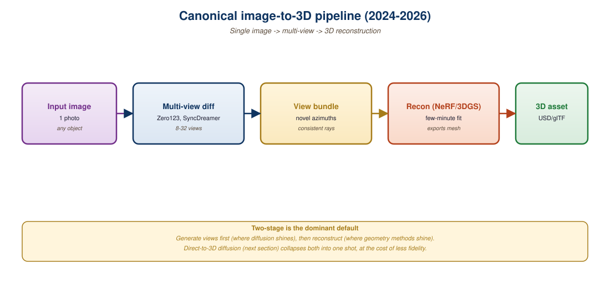

"DreamFusion needed an hour. Zero123 needed a model. Now we need both."
Pixel, Image-To-3D AI Agent
Image-to-3D in 2026 is a two-tier stack. The first tier is a multi-view diffusion model that, given a single image of an object, samples several plausible novel views. The second tier lifts those views into an explicit 3D representation, usually a Gaussian splat (Section 23.1) or a textured mesh. The breakthrough was Zero-1-to-3 (Liu et al., 2023): a camera-conditioned Stable Diffusion fine-tune that knows how to imagine the back of a chair from its front. Stable Zero123, MVDream, Zero123-XL, and Wonder3D extended this to consistent multi-view sampling. The state of the art (Trellis, see Section 23.4) skips view rendering entirely and diffuses 3D structure directly. This section unpacks the tier-1 multi-view diffusion pieces.
Prerequisites
This section builds on the latent-diffusion intuition from Section 31.1, the 3D Gaussian Splatting fundamentals of Section 23.1, and the cross-attention conditioning patterns from Section 3.1.

23.3.1 The Zero-1-to-3 Trick
Zero-1-to-3 by Liu et al. (2023) showed that you can teach Stable Diffusion to perform novel view synthesis with surprisingly little surgery. The recipe is:
- Start from a pretrained Stable Diffusion 1.5 checkpoint.
- Fine-tune on the Objaverse-LVIS dataset where each example is (input view, target view, relative camera pose).
- Condition the diffusion U-Net on the relative camera pose (three numbers: $\Delta\text{elevation}$, $\Delta\text{azimuth}$, $\Delta\text{radius}$) via a small MLP that projects into the cross-attention space alongside the CLIP image embedding.
The model learns a strong, generic prior over object-centric novel views. Given a single image of a teddy bear and a target pose, it produces a plausible image of the teddy bear from that pose. The crucial limitation: each call is independent. Sampling two different target poses gives two views that may not be mutually consistent (the teddy's bow appears in different sizes or shifts color).
Stable Diffusion was trained on billions of internet images. Even without explicit 3D supervision, it learned strong implicit priors about how objects look from different angles, what's behind a chair, how light moves across a face. Zero-1-to-3 just unlocks that latent knowledge by giving the model explicit camera conditioning. This is the same lesson as Section 17.1's parameter-efficient fine-tuning: the pretrained weights already know more than they let on.
23.3.2 Stable Zero123: The Stability AI Successor
Stability AI's Stable Zero123 (released December 2023) improved Zero-1-to-3 along three axes:
- Better filtering of Objaverse: removed low-quality assets (CAD-like flat shading, watermarked previews, malformed UVs), keeping ~80k high-quality objects out of the ~800k in Objaverse.
- Elevation conditioning fix: original Zero-1-to-3 used arbitrary camera elevations; Stable Zero123 normalizes elevation to a canonical reference frame, which substantially reduces the "tilted floor" artifact.
- SDXL backbone for the larger Stable Zero123 XL variant: more capacity, sharper outputs at 768x768.
# Stable Zero123 via the diffusers library. Generates a single
# novel view from an input image at a target relative pose.
from diffusers import DiffusionPipeline
from PIL import Image
import torch
pipe = DiffusionPipeline.from_pretrained(
"stabilityai/stable-zero123",
custom_pipeline="stable_zero123",
torch_dtype=torch.float16,
).to("cuda")
input_image = Image.open("chair.png").convert("RGBA")
# Camera deltas in degrees. (0, 0, 0) is the input view.
elevation = 10.0 # positive = look down
azimuth = 90.0 # orbit to the right
radius = 0.0 # keep the same distance
novel_view = pipe(
image=input_image,
elevation=elevation,
azimuth=azimuth,
radius=radius,
num_inference_steps=50,
guidance_scale=3.0,
).images[0]
novel_view.save("chair_side.png")23.3.3 The Multi-View Consistency Problem
Sampling four poses independently and lifting them with 3DGS produces a famous failure mode: the front of the chair looks fine, the back looks fine, the seam where they meet is a smear. The fix is joint sampling: generate all $N$ views in a single diffusion run with cross-view attention. MVDream (Shi et al., 2024) and Zero123++ (Shi et al., 2023) were the first widely-used joint samplers.
MVDream extends the SD U-Net so that the attention layers also attend across views. Mathematically, the cross-view attention at layer $\ell$ uses keys and values pooled across all $N$ views being denoised in parallel:
$$ \text{Attn}_\ell(Q^{(v)}, K^{(1..N)}, V^{(1..N)}) $$
This forces the diffusion process to maintain global consistency: a stripe on the chair's back is visible (in mirror image) from the front view, and the joint attention propagates that constraint through every denoising step. Empirically, MVDream produces 4 to 8 views that lift cleanly to a 3DGS scene with minimal seam artifacts.
| Model | Views per Run | Cross-view Attention | Resolution | 2024-2026 Successor |
|---|---|---|---|---|
| Zero-1-to-3 | 1 | No | 256x256 | Stable Zero123 |
| Stable Zero123 | 1 | No | 256 or 768 | Zero123-XL |
| Zero123++ | 6 (fixed elevations) | Yes (concat tile) | 320x320 | Zero123++ v2 |
| MVDream | 4 | Yes | 256x256 | ImageDream |
| Wonder3D | 6 (RGB + normal) | Yes (cross-domain) | 256x256 | Era3D |
| SV3D (Stable Video 3D) | 21 (orbit video) | Yes (temporal) | 576x576 | SF3D, Stable Fast 3D |
23.3.4 Lifting with Score Distillation Sampling (SDS)
Even with consistent multi-view samples, you still need to produce a 3D representation. DreamFusion (Poole et al., 2023) introduced Score Distillation Sampling (SDS), the loss function that bridges 2D diffusion priors with 3D optimization:
$$ \nabla_\theta \mathcal{L}_{\text{SDS}} = \mathbb{E}_{t,\epsilon}\!\left[ w(t)\,\big(\epsilon_\phi(z_t; y, t) - \epsilon\big)\, \frac{\partial z}{\partial \theta} \right] $$
Here $\theta$ are the 3DGS parameters (or NeRF MLP weights), $z$ is the rendered image at a random camera, $z_t$ is its noised version at diffusion timestep $t$, and $\epsilon_\phi$ is the pretrained diffusion model. The expression says: render the 3D scene from a random view, noise the render, ask the diffusion model "what noise was that?", and backpropagate the difference into the 3D parameters. Over thousands of iterations, this pulls the 3D scene toward something that looks plausible to the 2D diffusion model from every angle.
SDS has known pathologies: it produces over-saturated colors, Janus-face artifacts (two-faced animals), and slow convergence. Three remedies dominate 2024-2026 practice:
- Variational SDS (VSD) from ProlificDreamer reduces over-saturation by treating the rendered view distribution as a Gaussian rather than a delta.
- LRM-style amortization trains a feed-forward network to predict the 3D representation in one shot from multi-view diffusion outputs, skipping SDS entirely.
- Joint multi-view + SDS, as in DreamGaussian (Tang et al., 2024), uses MVDream outputs as direct supervision for the first 100 to 500 steps, then continues with SDS for fine details. DreamGaussian produces a textured mesh from a single image in ~2 minutes on an A100.
For most practitioners in 2026, DreamGaussian or its descendants (SuGaR, GaussianDreamer, LucidDreamer) is the right starting point. Inference is fast (2 to 5 minutes per object), output is a Gaussian splat or textured mesh, and the pipeline is end-to-end from a single image. The trade-off is that fine details lag dedicated mesh-reconstruction pipelines like InstantMesh and Era3D; pick based on whether you need speed or geometric fidelity.
23.3.5 The Large Reconstruction Model Pivot
By mid-2024, the field largely abandoned per-object SDS optimization in favor of feed-forward Large Reconstruction Models (LRMs). The bet: if Stable Diffusion can amortize text-to-image into a single forward pass, an analogous transformer can amortize image-to-3D. The LRM by Hong et al. (2024) trains a transformer encoder-decoder on Objaverse to map a single image to triplane NeRF features, achieving high-quality reconstruction in 300 ms per object.
InstantMesh (Xu et al., 2024) layered an SDF-based mesh extractor on top, producing watertight meshes in ~10 seconds. SF3D (Stable Fast 3D, Stability AI 2024) produced UV-unwrapped, PBR-shaded meshes in ~500 ms.
The next leap, Trellis (covered in Section 23.4), skips multi-view rendering entirely: the model diffuses a structured 3D latent that can be decoded into a Gaussian splat, NeRF, or mesh.
A 2025 fashion retailer used Stable Fast 3D to generate 3D rotations of 200,000 product photographs (shoes, bags, accessories). The pipeline ran on 4 A10G GPUs and processed the entire catalog in 72 hours, producing both a 3D Gaussian splat (for AR try-on) and a watertight glTF mesh (for web 3D viewer). The team measured a 12% lift in conversion on product pages with interactive 3D, justifying the GPU cost within the first month.
23.3.6 Failure Modes and the Objaverse Domain Gap
Every model in this section was trained on Objaverse, a dataset of artist-created 3D assets dominated by single isolated objects. When the input strays from that distribution, the failure modes are predictable and worth memorizing:
- Scenes versus objects: Zero123-family models collapse on full scenes (a kitchen, a street). For scene-scale image-to-3D, look at MVDiffusion or BlockFusion instead.
- Humans: generic models produce melted faces. Use human-specific pipelines (Magic123, TeCH, SiTH) or condition on a parametric body model.
- Reflective and transparent surfaces: the underlying diffusion model never learned to predict consistent reflections across views, so you get hallucinated geometry where the glass should be.
- Top-down or unusual viewpoints: training data is heavily front-3/4 view biased; satellite and overhead inputs trigger out-of-distribution behavior.
The Janus problem (named after the Roman two-faced god) appears when SDS converges on a 3D shape with the input view's features replicated on multiple sides. A teddy bear ends up with a face on its front and another on its back. Always render and inspect the output from at least four orbital views before trusting it. Joint multi-view sampling (MVDream and successors) largely fixes this, but it returns under aggressive SDS fine-tuning.
Image-to-3D is now a two-tier or one-tier pipeline. Two-tier: Stable Zero123 or MVDream samples consistent novel views, then DreamGaussian or LRM lifts them. One-tier: Trellis or Stable Fast 3D maps the image directly to a 3D representation in under a second. Joint multi-view attention and large-scale pretraining on Objaverse are the two ingredients that made this work. Failure modes cluster around the Objaverse domain (objects, not scenes; clean materials; canonical viewpoints), so use case-specific pipelines for humans, scenes, and reflective objects.
- Why does Stable Zero123 use guidance scale 3.0 instead of the 7.5 typical of text-to-image diffusion?
- Independent sampling from Zero-1-to-3 produces inconsistent views. What change does MVDream make to the attention layers, and why does it fix this?
- SDS pulls a 3D representation toward what looks plausible from random views. Why does this produce over-saturated colors, and what does VSD do about it?
- If your input is a single photo of a kitchen interior, why is Zero123 the wrong tool, and what would you reach for instead?
What Comes Next
Section 23.4: Direct 3D Diffusion with Trellis and Structured Latents covers the one-tier successors that bypass multi-view rendering entirely, diffusing in a structured 3D latent space.